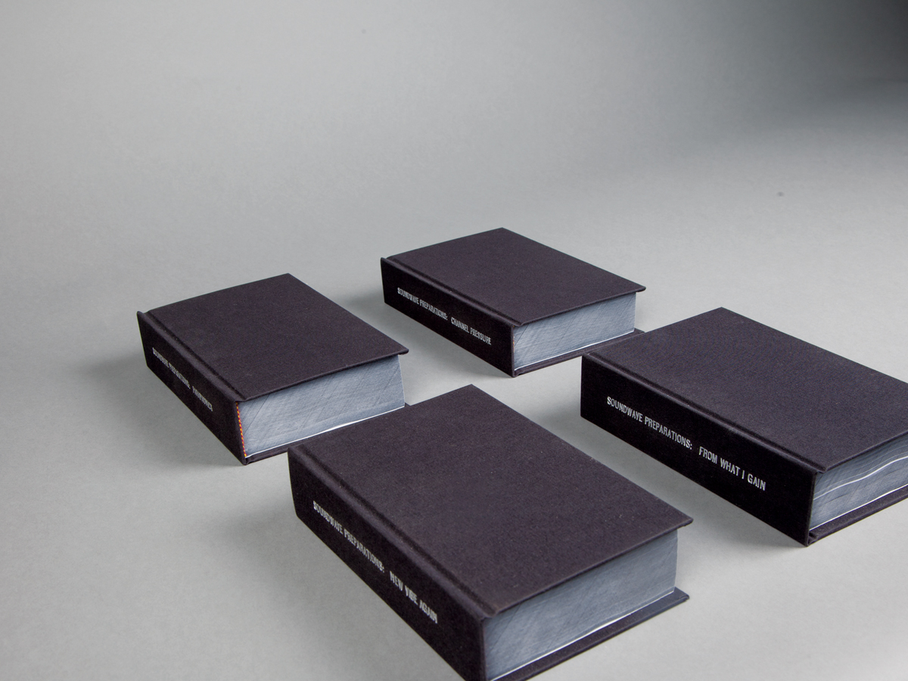
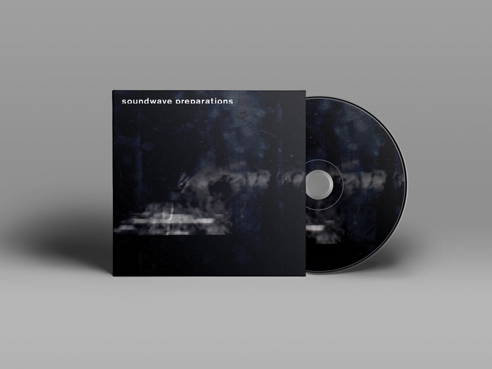
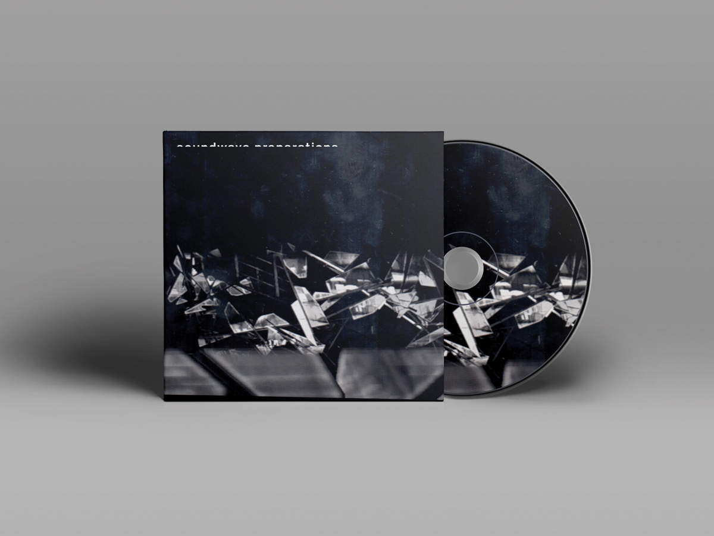
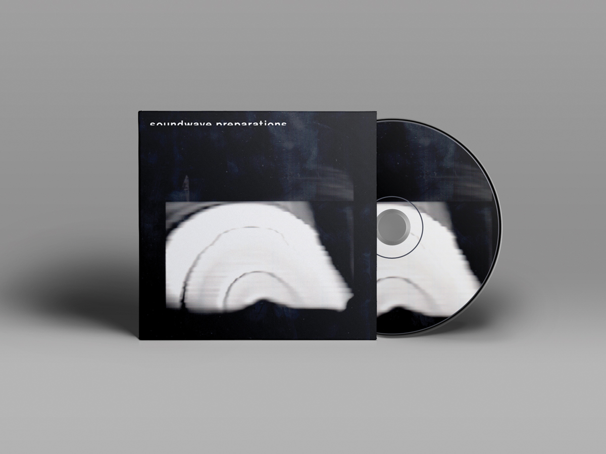
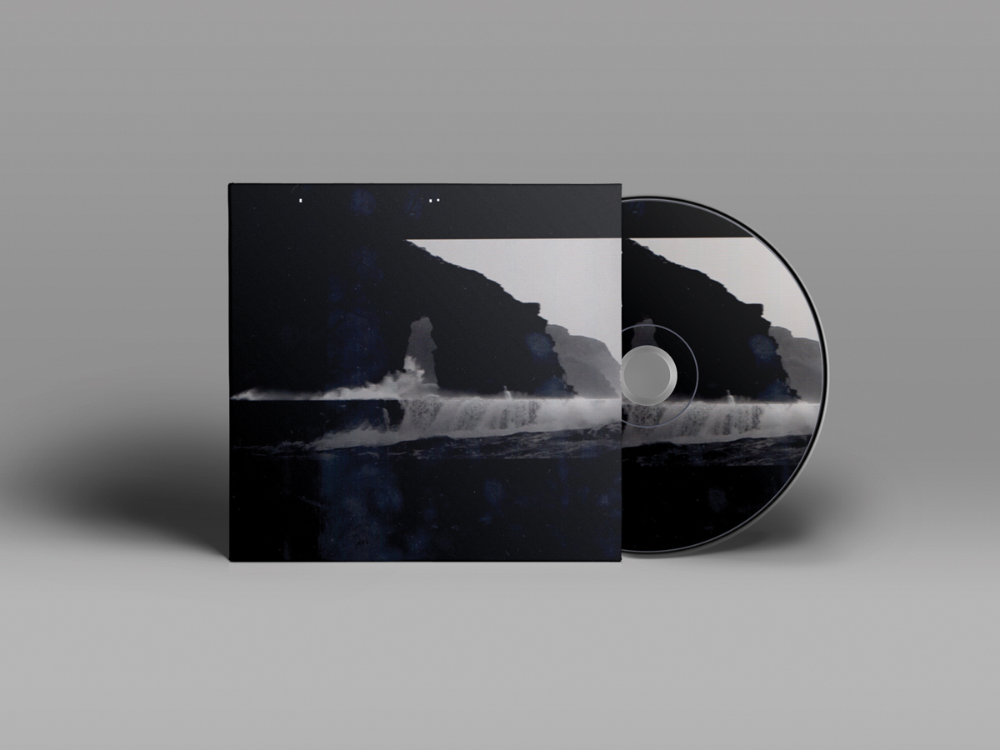

Soundwave Preparations
Identity Design - Book Design
2014
About:
Soundwave Preparations = an Imprint whose representational approach is defined by its engagement with all stages of a given musical project.
Identity Design - Book Design
2014
About:
Soundwave Preparations = an Imprint whose representational approach is defined by its engagement with all stages of a given musical project.
A project motivated by the desire to diversify our sensory understanding of sound through the sampling of non-sonic material.
Through the analysis of compositional elements, Soundwave preparations provides an alternative stance amongst the standards of contemporary musical classifications. Its designed output acts as an instrument of organization and audiovisual contribution.
Soundwave Preparations is both curated and comprised by the multidisciplinary work of Gabriela d'Amato, combining sonic and digital minimalism across all products within the evolving identity.
Methodology = Analyze, Synthesize, Materialize.
Methodology = Analyze, Synthesize, Materialize.




